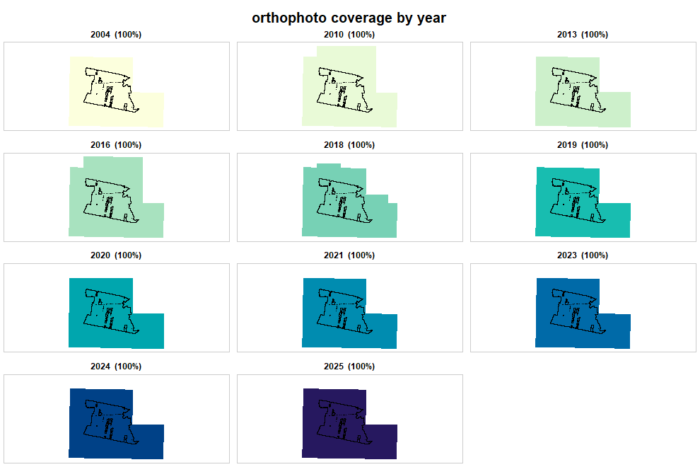

Every question in this package has the same shape: what exists here, and which of it do I want? Asking is one step, downloading is another, and nothing is fetched until you say so.
An area of interest
as_aoi() takes whatever you already have. A point and a
radius:
as_aoi(c(16.93, 52.41), buffer = 500)
#> <rgeopl area of interest>
#> type: area
#> features: 1
#> CRS: EPSG:2180
#> bbox: 358745.4, 506413.6, 359745.4, 507413.6 (EPSG:2180)The CRS was not given and did not need to be: those coordinates fall inside Poland’s longitude/latitude window, and the PL-1992 window does not overlap it. Coordinates outside both are refused rather than guessed at.
Files work too. The package ships two real areas to experiment on:
rgeopl_example()
#> [1] "gleboczek_aoi.shp" "test_lasow.shp"
aoi <- as_aoi(sf::st_read(rgeopl_example("gleboczek_aoi.shp"), quiet = TRUE))
aoi
#> <rgeopl area of interest>
#> type: area
#> features: 2
#> CRS: EPSG:2180
#> bbox: 416481.7, 535097.9, 420166.4, 538071.9 (EPSG:2180)Two polygons, about 600 ha, near Gniezno. sf objects,
terra objects, bounding boxes, coordinate matrices and WKT
strings are all accepted.
What exists here
Three indexes, one per kind of product. Nothing is downloaded; each returns one row per tile, with the tile outline as geometry.
dem <- dem_request(aoi)
#> Querying the elevation index...
#> dropped 23 tiles that met the bounding box but not the area
#> 96 tiles, 10 vintages (2004-2025)
ort <- ortho_request(aoi)
#> Querying the orthophoto index...
#> dropped 20 tiles that met the bounding box but not the area
#> 98 tiles, 11 vintages (2004-2025)
dem
#> <rgeopl elevation index: 96 tiles>
#> vintages: 2004, 2010, 2014, 2016, 2019, 2020, 2021, 2023, 2024, 2025
#> products: DTM, DSM, PointCloud
#> note: mixed vertical datums (PL-EVRF2007-NH, PL-KRON86-NH)
#> Simple feature collection with 96 features and 16 fields
#> Geometry type: POLYGON
#> Dimension: XY
#> Bounding box: xmin: 415494.5 ymin: 534033.4 xmax: 424017.1 ymax: 538805.9
#> Projected CRS: ETRF2000-PL / CS92
#> First 10 features:
#> sheetID year product format resolution density
#> 1 N-33-120-D-c-4-3 2021 DTM ARC/INFO ASCII GRID 5 NA
#> 2 N-33-120-D-c-3-3 2021 DTM ARC/INFO ASCII GRID 5 NA
#> 3 N-33-120-D-c-3-1 2021 DTM ARC/INFO ASCII GRID 5 NA
#> 5 N-33-120-D-c-3-4 2021 DTM ARC/INFO ASCII GRID 5 NA
#> 6 N-33-120-D-c-3-2 2021 DTM ARC/INFO ASCII GRID 5 NA
#> 7 N-33-120-D-c-3-3 2020 DTM ARC/INFO ASCII GRID 5 NA
#> 8 N-33-120-D-c-3-4 2020 DTM ARC/INFO ASCII GRID 5 NA
#> 9 N-33-120-D-c-3-2 2020 DTM ARC/INFO ASCII GRID 5 NA
#> 11 N-33-120-D-c-3-1 2020 DTM ARC/INFO ASCII GRID 5 NA
#> 12 N-33-120-D-c-4-3 2020 DTM ARC/INFO ASCII GRID 5 NA
#> source CRS VRS avgElevErr avgPlanarErr date
#> 1 Aerial photo PL-1992 PL-EVRF2007-NH 0.6 0.75 2021-06-04
#> 2 Aerial photo PL-1992 PL-EVRF2007-NH 0.6 0.75 2021-06-04
#> 3 Aerial photo PL-1992 PL-EVRF2007-NH 0.6 0.75 2021-06-04
#> 5 Aerial photo PL-1992 PL-EVRF2007-NH 0.6 0.75 2021-06-04
#> 6 Aerial photo PL-1992 PL-EVRF2007-NH 0.6 0.75 2021-06-04
#> 7 Aerial photo PL-1992 PL-EVRF2007-NH 0.5 0.75 2020-09-16
#> 8 Aerial photo PL-1992 PL-EVRF2007-NH 0.5 0.75 2020-09-16
#> 9 Aerial photo PL-1992 PL-EVRF2007-NH 0.5 0.75 2020-09-16
#> 11 Aerial photo PL-1992 PL-EVRF2007-NH 0.5 0.75 2020-09-16
#> 12 Aerial photo PL-1992 PL-EVRF2007-NH 0.5 0.75 2020-09-16
#> isFilled seriesID filename
#> 1 TRUE 74964 74964_1081535_N-33-120-D-c-4-3
#> 2 TRUE 74964 74964_1081531_N-33-120-D-c-3-3
#> 3 TRUE 74964 74964_1081529_N-33-120-D-c-3-1
#> 5 TRUE 74964 74964_1081532_N-33-120-D-c-3-4
#> 6 TRUE 74964 74964_1081530_N-33-120-D-c-3-2
#> 7 TRUE 73804 73804_1033127_N-33-120-D-c-3-3
#> 8 TRUE 73804 73804_1033128_N-33-120-D-c-3-4
#> 9 TRUE 73804 73804_1033126_N-33-120-D-c-3-2
#> 11 TRUE 73804 73804_1033125_N-33-120-D-c-3-1
#> 12 TRUE 73804 73804_1033131_N-33-120-D-c-4-3
#> URL
#> 1 https://opendata.geoportal.gov.pl/NumDaneWys/NMT/74964/74964_1081535_N-33-120-D-c-4-3.asc
#> 2 https://opendata.geoportal.gov.pl/NumDaneWys/NMT/74964/74964_1081531_N-33-120-D-c-3-3.asc
#> 3 https://opendata.geoportal.gov.pl/NumDaneWys/NMT/74964/74964_1081529_N-33-120-D-c-3-1.asc
#> 5 https://opendata.geoportal.gov.pl/NumDaneWys/NMT/74964/74964_1081532_N-33-120-D-c-3-4.asc
#> 6 https://opendata.geoportal.gov.pl/NumDaneWys/NMT/74964/74964_1081530_N-33-120-D-c-3-2.asc
#> 7 https://opendata.geoportal.gov.pl/NumDaneWys/NMT/73804/73804_1033127_N-33-120-D-c-3-3.asc
#> 8 https://opendata.geoportal.gov.pl/NumDaneWys/NMT/73804/73804_1033128_N-33-120-D-c-3-4.asc
#> 9 https://opendata.geoportal.gov.pl/NumDaneWys/NMT/73804/73804_1033126_N-33-120-D-c-3-2.asc
#> 11 https://opendata.geoportal.gov.pl/NumDaneWys/NMT/73804/73804_1033125_N-33-120-D-c-3-1.asc
#> 12 https://opendata.geoportal.gov.pl/NumDaneWys/NMT/73804/73804_1033131_N-33-120-D-c-4-3.asc
#> geometry
#> 1 POLYGON ((419748.3 535838.6...
#> 2 POLYGON ((415524.7 535910.1...
#> 3 POLYGON ((415564.9 538226.7...
#> 5 POLYGON ((417636.5 535873.9...
#> 6 POLYGON ((417675.7 538190.6...
#> 7 POLYGON ((415524.7 535910.1...
#> 8 POLYGON ((417636.5 535873.9...
#> 9 POLYGON ((417675.7 538190.6...
#> 11 POLYGON ((415564.9 538226.7...
#> 12 POLYGON ((419748.3 535838.6...The elevation index mixes three products, and the counts per vintage say a lot about what is actually possible:
table(dem$year, dem$product)
#>
#> DTM DSM PointCloud
#> 2004 8 0 0
#> 2010 2 0 0
#> 2014 10 10 14
#> 2016 2 0 0
#> 2019 6 0 0
#> 2020 5 0 0
#> 2021 5 0 0
#> 2023 5 0 0
#> 2024 5 5 14
#> 2025 5 0 0Terrain models exist for ten years here. Surface models – the other half of a canopy height model – exist for two.
Which vintage actually covers the area
An index tells you tiles exist. It does not tell you whether they cover your area, and a vintage that covers 80% of it cannot be mosaicked into one surface.
coverage(ort, by = "year", aoi = aoi)
#> year tiles area_km2 aoi_share
#> 1 2004 5 24.47 1
#> 2 2010 12 29.09 1
#> 3 2013 10 24.87 1
#> 4 2016 12 29.09 1
#> 5 2018 14 25.76 1
#> 6 2019 5 24.47 1
#> 7 2020 5 24.87 1
#> 8 2021 10 24.47 1
#> 9 2023 10 24.47 1
#> 10 2024 5 24.47 1
#> 11 2025 10 24.47 1aoi_share is the number to read. The same thing as a
picture, one panel per vintage:
plot_coverage(ort, by = "year", aoi = aoi)
plot of chunk ortho-coverage
Small multiples rather than one map, deliberately: vintages overlap almost completely, so a single overlaid map shows the newest year and hides every other – the opposite of what you need in order to choose between them.
Two columns worth reading before you mosaic
Vertical reference system. Poland switched from PL-KRON86-NH to PL-EVRF2007-NH, and both turn up within a few kilometres of each other:
table(dem$year, dem$VRS)
#>
#> PL-EVRF2007-NH PL-KRON86-NH
#> 2004 0 8
#> 2010 0 2
#> 2014 0 34
#> 2016 0 2
#> 2019 6 0
#> 2020 5 0
#> 2021 5 0
#> 2023 5 0
#> 2024 24 0
#> 2025 5 0Heights are not comparable across that boundary.
tile_download() warns when a selection mixes the two. It
does not bite a canopy height model – surface minus terrain within one
year cancels the datum – but it does bite any direct comparison of two
terrain models.
Resolution and density are different quantities. The
service reports both through one text field, in different units:
"1.00 m" for a grid, "10 p/m2" for a point
cloud. They are split here, because a filter like
resolution <= 1 that silently also caught the sparsest
point clouds would be worse than useless.
subset(sf::st_drop_geometry(dem), product == "PointCloud",
select = c(year, date, format, resolution, density, avgElevErr))[1:3, ]
#> <rgeopl index index: 3 tiles>
#> vintages: 2014
#> year date format resolution density avgElevErr
#> 39 2014 2014-04-06 LAS NA 4 0.15
#> 40 2014 2014-04-06 LAS NA 4 0.15
#> 42 2014 2014-04-06 LAS NA 4 0.15Filtering and downloading
The index is an ordinary sf data frame. Filter it
however you like – base R, dplyr,
sf::st_filter() – and pass what survives to
tile_download(). The class does not have to survive the
pipeline; tile_download() only needs the URL
and filename columns.
library(dplyr)
laz <- dem |>
filter(product == "PointCloud", format == "LAZ") |>
slice_max(year, n = 1)
got <- tile_download(laz, outdir = "als/")
got$pathFiles land in the cache, so a tile already on disk is not fetched
twice, across sessions. outdir copies them somewhere
convenient; it is an export, not a move.
cache_info()
#> Cache at D:/geodata/cache: 34 files, 2.1 GB
#> dtm 12 files, 410.2 MB
#> pointcloud 22 files, 1.7 GBWhere the record limit went
The service behind these indexes returns at most 1000 records per query and sets a flag to say it truncated. Ask for a large area and you get a thousand tiles and no error.
That is handled internally: the record count is read first, and when it exceeds one page the results are assembled by object id instead. A 40 x 40 km area returns 19 766 index records in 20 requests, with the assembled row count checked against the count the server promised. A short result raises a warning rather than passing as complete.
big <- as_aoi(c(16.80, 52.44), buffer = 20000)
nrow(dem_request(big))
#> 19766Connectivity
The GUGiK services refuse connections from outside Poland; the BDL services do not. Working on the elevation and orthophoto side from abroad needs a VPN endpoint in Poland, and the error message says so when a request fails against those hosts.
The forest side is covered in vignette("forest-data"),
and the two are put together in vignette("case-study").